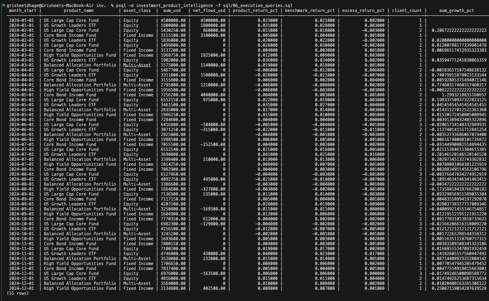
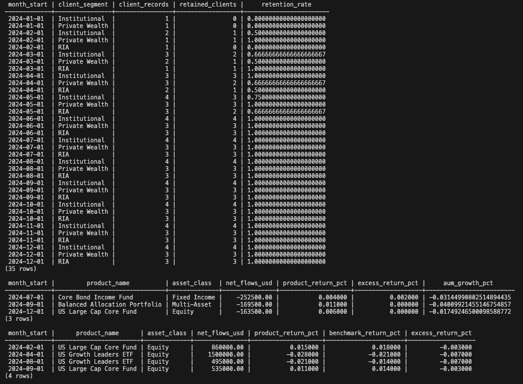
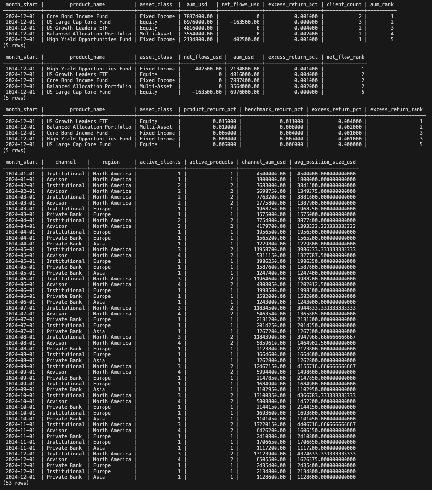

A production-style PostgreSQL analytics warehouse that gives financial product leaders a unified, decision-ready view of AUM growth, net flows, benchmark-relative performance, client retention, and channel economics — built the way institutional analytics teams actually build it.
A financial product organization managing a multi-product investment platform cannot make confident decisions using siloed reports. It needs a unified analytics layer.
Track which products are growing assets under management fastest across regions, channels, and client segments.
Identify where new money is flowing in and where redemptions are occurring. Spot commercial momentum shifts early.
Calculate excess returns vs. benchmark for every product. See which products are actually earning their keep.
Monitor client stability and churn risk by segment, region, and distribution channel. Know who's staying and who's leaving.
Understand which distribution channels and regions drive the most commercial value and concentration risk.
Detect when investment performance diverges from commercial momentum — the signals that matter most.
A medallion architecture with four clearly separated layers — raw, staging, mart, and analytics.
Source-fidelity operational tables — products, clients, advisors, transactions, NAV, positions. No transformations applied.
Cleaned, standardized, and enriched views. Business logic applied once, reused everywhere downstream.
Denormalized KPI fact tables. Optimized for analytical queries and executive reporting dashboards.
Quality-control assertions and validation queries. Ensures model integrity before outputs are trusted.
Four denormalized, business-facing KPI fact tables designed for executive-level analytics.
Built with production-grade technologies and architectural patterns.
Executive-ready analytical outputs validated through quality checks.



Most analytics projects are a folder of ad-hoc queries. This warehouse is architected differently — intentionally.
Raw, staging, mart, and analytics layers are fully decoupled. Changes in source data structure are absorbed at staging without touching marts.
Business logic is defined once in staging and inherited consistently downstream. No divergent definitions of "net flow" or "excess return."
The mart layer is designed for repeated querying. Executive dashboards, ad-hoc analysis, and data exports read from the same validated tables.
No executive output is produced without passing quality checks. This is how institutional data teams enforce trust in their numbers.